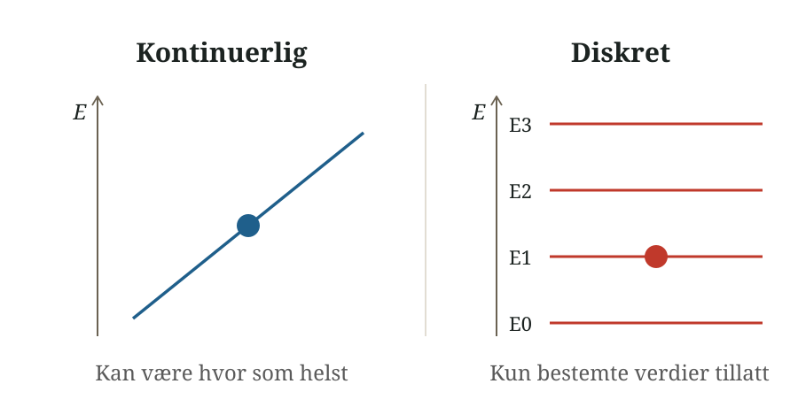
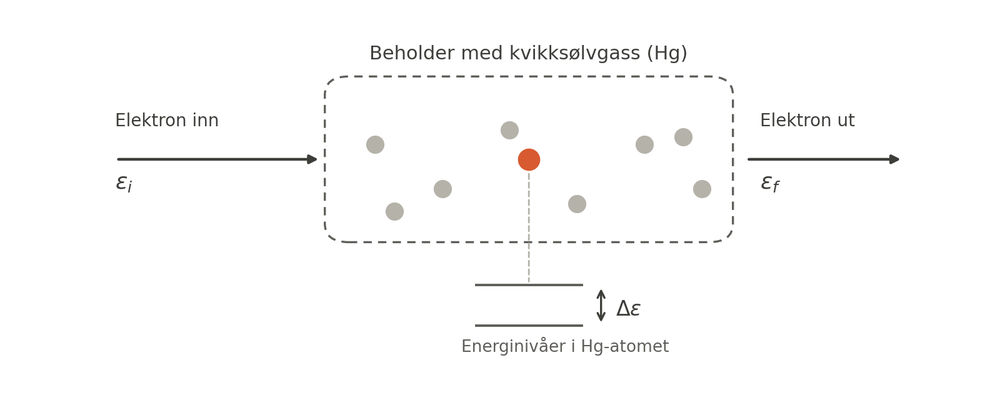
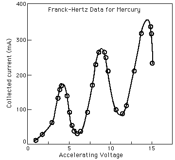
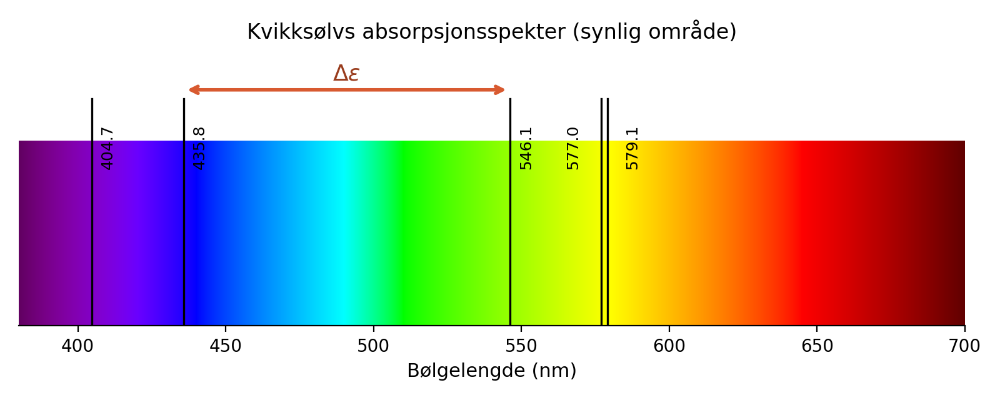
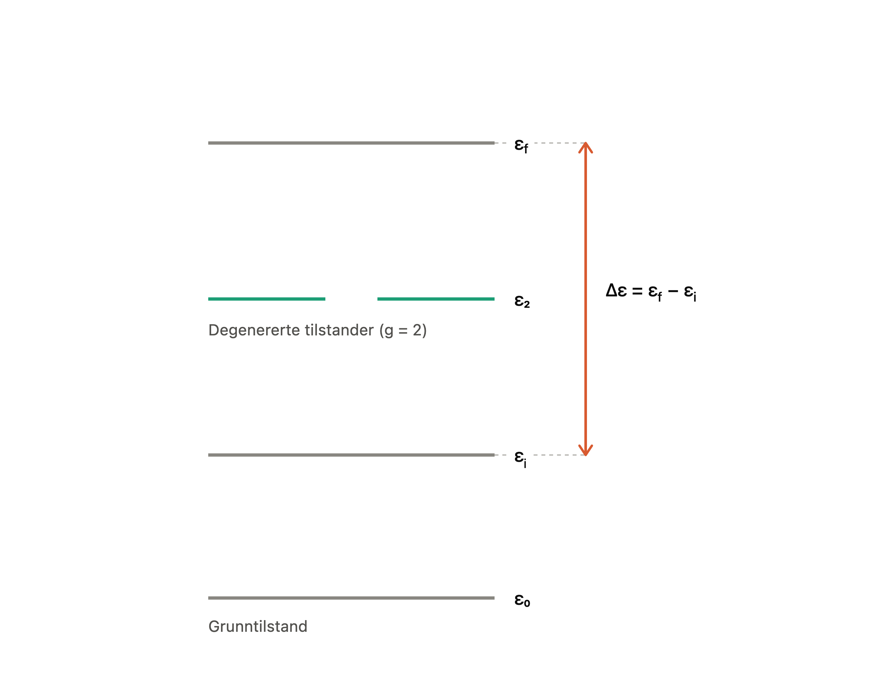

Grunnleggende begreper#
Innhold
I denne modulen kan du lese om:
Definisjoner og navn på antakelser og modeller i termodynamikken
Mikro- og makrotilstander
Forskjellen mellom empirisk og statistisk utgangspunkt
Enkle definisjoner av termodynamikkens lover
Kvantemekanikk: grunnlaget for statistisk mekanikk
Dette appendikset samler sentrale begreper og modeller som brukes gjennom Bifrost. Det er ment som et oppslagsverk, ikke som et kapittel du må lese fra begynnelse til slutt. Gå tilbake hit når du møter et uttrykk du er usikker på.
I siste del finner du en kort introduksjon til kvantemekanikk. Dette er bakgrunnsstoff som forklarer hvor energitilstandene i statistisk termodynamikk kommer fra.
Hva er et system?#
Et termodynamisk system er en del av universet vi velger ut for å studere. Resten av universet er da omgivelsene. Systemet og omgivelsene er skilt fra hverandre av en fysisk eller imaginær barriere. Hvordan du definerer grensene til systemet ditt, avhenger av hva slags problem du vil løse.
Et delsystem er en avgrenset del av et større system som vi velger å se isolert på, for å forenkle analysen. I praksis betyr det at du “tegner en grense” et sted i et system, og alt innenfor denne grensen kalles delsystemet, mens resten ligger utenfor og kalles da omgivelsene. Et enkelt eksempel: hvis du studerer ett spesifikt gassmolekyl i en beholder med mange molekyler, kan du behandle det ene molekylet som et delsystem, og resten av molekylene som omgivelsene det vekselvirker med.
Ensembler#
Et statistisk ensemble er en tenkt samling av mange identiske kopier av det samme systemet. Kopiene beskrives med de samme betingelsene, men kan befinne seg i ulike mikrotilstander. Ensemblet er et tanke- og regneverktøy som gjør det mulig å tolke sannsynligheter og gjennomsnittsverdier.
Systemet som kopieres trenger ikke være makroskopisk. Det kan for eksempel være ett enkelt molekyl, et mindre delsystem eller en hel gassprøve. Det avgjørende er hva vi har valgt å definere som systemet.
Valget av ensemble bestemmes av hva systemet kan utveksle med omgivelsene, og hvilke størrelser som holdes konstante:
Mikrokanonisk ensemble: Et isolert system med konstant energi \(E\), volum \(V\) og antall partikler \(N\). Systemet utveksler verken energi eller partikler med omgivelsene.
Kanonisk ensemble: Et system med konstant temperatur \(T\), volum \(V\) og antall partikler \(N\). Systemet kan utveksle energi med et varmereservoar, slik at energien kan variere selv om temperaturen er konstant.
Makrokanonisk ensemble: Et system med konstant temperatur \(T\), volum \(V\) og kjemisk potensial \(\mu\). Systemet kan utveksle både energi og partikler med et reservoar, slik at både energien og antall partikler kan variere.
Når en størrelse holdes konstant, vises dette ofte i notasjonen. Et eksempel er varmekapasiteten ved konstant volum,
Her viser \(V,N\) at volumet og antall partikler holdes konstant mens temperaturen endres. Se også blandede partiellderiverte.
Ensemblegjennomsnitt#
I et ensemble kan de ulike kopiene befinne seg i forskjellige mikrotilstander. En gjennomsnittsverdi over ensemblet trenger derfor ikke være lik verdien i én bestemt kopi.
Simuleringen nedenfor viser et enkelt system med fem tillatte energinivåer. Hver kopi i ensemblet befinner seg på ett av nivåene. Søylene viser fordelingen av kopiene mellom energinivåene, mens den stiplede linjen viser gjennomsnittsenergien \(U\) for hele ensemblet. Derfor kan \(U\) ligge mellom to tillatte energinivåer selv om ingen enkelt kopi har akkurat denne energien.
Glideren endrer forholdet \(\Delta\varepsilon/k_\mathrm{B}T\). Når forholdet er stort, er fordelingen konsentrert mot de laveste energinivåene. Når forholdet blir mindre, fordeles kopiene over flere nivåer.
Mikrotilstander og makrotilstander#
En makrotilstand beskriver systemet med størrelser vi kan måle i laboratoriet: temperatur, trykk, volum, total energi. En mikrotilstand er én bestemt måte energien i et system kan fordeles på som resulterer i den makrotistanden vi observerer. En makrotilstand kan derfor ha mange mulige tilhørende mikrotilstander, men i et gitt øyeblikk vil kun én bestemt mikrotilstand være realisert, tenk et øyeblikksbilde av alle molekylene i en gass.
Mikroskopisk:
Mikroskopisk nivå: når vi beskriver individuelle atomer eller molekyler.
Mikroskopisk egenskap: energier, posisjoner og hastigheter til individuelle atomer eller molekyler.
Mikrostilstand: Den nøyaktige fordelingen av energier til hvert enkelt atom eller molekyl i systemet.
Makroskopisk:
Makroskopisk nivå: når vi beskriver et system som helhet, slik vi kan observere og måle det. For eksempel egenskapene til en gass (bestående av flere enkelte gassmolekyler) i en beholder.
Makroskopisk egenskap: størrelser vi kan måle på laben, for eksempel temperatur, trykk, volum og indre energi.
Makrotilstand: en bestemt målbar størrelse (f.eks. energi, trykk, volum), som er resulatet av én eller flere mikrotilstander.
La oss se på et enkelt eksempel utenfor molekylverdenen, der vi kaster fire mynter. Makrotilstanden «to kron» kan realiseres med \(\binom{4}{2} = 6\) forskjellige mikrotilstander — avhengig av hvilke to mynter som viser kron. Makrotilstanden «fire kron» har bare én mikrotilstand. Dette har vi illustrert nedenfor, der antallet mikrotilstander for makrotilstandene en «kron», «to kron» og «tre kron» er representert med de mulige makrotilstandene dette tilsvarer.

Underveisoppgave
Skriv makrotilstandene som mangler i figuren ovenfor, og tegn alle mulige mikrotilstander for disse makrotilstandene. Hint, vi trenger ikke regne ut noe for vi har egentlig svaret allerede, hvorfor?
Enda et eksempel: tenk deg at du kaster to terninger. Det du bryr deg om er summen av øynene, det er makrotilstanden. Men det finnes mange forskjellige kombinasjoner av terning 1 og terning 2 som gir akkurat samme sum. Hver slik kombinasjon er en egen mikrotilstand, men samme makrotilstand:

Èn eller flere mikrotilstander kan altså tilsvare en makrotilstand, men du kan ikke gå baklengs. Hvis du bare vet at summen er 7, vet du ikke om det var (3,4), (1,6) eller (5,2) som ble kastet.
Vit hva systemet ditt er:
Vi kan velge å se på mikrotilstandene til et system bestående av én terning, da er det bare 6 mulige mikrotilstander. I dette tilfellet gir ingen av mikrotilstandene samme makrotilstand, så det er også bare 6 makrotillstander.
Vi kan også velge å se på mikrotilstandene til et system bestående av to terninger, som på figuren. Da blir det plutselig betydelig flere mulige mikrotilstander. I dette tilfellet kan flere mikrotilstander gi opphav til samme makrotilstand, som i figuren.
Bryr vi oss om hvilken av de to terningene som viser hvilket tall? Eller bryr vi oss kun om summen? Det velger vi selv, men vi er nødt til å ta et valg slik at vi vet hva vi evt finner ut av når vi studerer systemet.
Det er altså viktig å være obs på nøyaktig hva som er systemet man ser på.
Intensive og ekstensive størrelser#
Vi deler de termodynamiske størrelsene inn i to kategorier, basert på om størrelsen avhenger av mengden stoff, altså antall atomer/molekyler, eller ikke. Hvis du kutter et system i to, vil verdien av størrelsen også halveres?
Intensive størrelser: Avhenger ikke av mengden stoff (f.eks. temperatur, trykk, tetthet, farge, smeltepunkt).
Å gange en intensiv størrelse med en ekstensiv størrelse, gir en ekstensiv størrelse. For eksempel er tettheten ganger volumet lik massen: \(\rho \times V = m\).
Ekstensive størrelser: Avhenger av mengden stoff (f.eks. volum, masse, total energi, mol).
En ekstensiv størrelse gjøres intensiv ved å dele den på en annen ekstensiv størrelse. For eksempel masse delt på volum: \(m / V = \rho\) gir tettheten.
En annen fin måte å se på forskjellen på intensive og ekstensive størrelser er at ekstensive størrelser får vi ved å summere bidragene fra alle atomene/molekylene i sytemet, mens intensive størrelser får vi ved å ta gjennomsnittet over alle atomene/molekylene i systemet.
Prosesser#
Hva er egentlig en prosess? Vi bruker gjerne ordet for å beskrive at noe skjer, men det kan spesifiseres litt mer i konteksten av kjemi.
En prosess er en endring i tilstanden til et system, systemet går fra én tilstand (f.eks. gitt trykk, volum og temperatur) til en annen.
Stifunksjoner og tilstandsfunksjoner#
Stifunksjoner: avhenger av veien mellom start- og sluttilstanden (f.eks. varme og arbeid).
Tilstandsfunksjoner: avhenger kun av start- og sluttilstanden, og ikke av veien dit (f.eks. indre energi, entalpi, entropi).
Et intuitivt eksempel kan være en fjelltur: Vi kan ta mange ulike stier opp et fjell, noen tyngre enn andre (ulikt arbeid), og spise og frobrenne en variende mengde Kvikk Lunsj for å komme oss opp fjellet, men til slutt vil man uansett ha kommet seg fra bunn til topp og den potensielle energien du har når du er på toppen vil være den samme uansett hvilken vei du tok, den avhenger kun av start- og slutt-posisjon.
Ulike typer prosesser#
Isoterm: temperaturen holdes konstant gjennom hele prosessen (\(\Delta T = 0\)).
Isokor: volumet holdes konstant gjennom hele prosessen (\(\Delta V = 0\)).
Isobar: trykket holdes konstant gjennom hele prosessen (\(\Delta P = 0\)).
Adiabatisk: ingen varme utveksles med omgivelsene (\(q = 0\)), all endring i indre energi skyldes da arbeid.
Definisjon
Iso kommer fra det greske ordet isos og betyr “lik” eller “samme”. Da betyr isoterm “lik temperatur”. Adiabatisk kommer fra adiabatos som betyr ugjennomtrengelig, altså varme slipper ikke gjennom, det utveksles ikke.
Energi#
Kinetisk energi: eller bevegelsesenergi, dette er energien et objekt har på grunn av sin hastighet gjennom rommet (f.eks. molekyler i bevegelse), den uttrykkes som
der \(m\) er massen og \(v\) er hastigheten. Legg merke til at kinetisk energi øker med kvadratet av hastigheten: dobler du hastigheten, firedobler du den kinetiske energien.
Potensiell energi: energi et object har på grunn av posisjon eller tilstand. Den potensielle energien til et objekt øker når arbeid utføres på objektet mot en kraft. To kjente eksempler fra klassisk mekanikk:
Gravitasjonell potensielle energi: \(E_p = mgh\) (høyde over bakken), arbeidet er å løfte gjenstanden opp.
Potensiell energi i en fjær: \(E_p = \frac{1}{2}kx^2\), arbeidet er å strekke ut fjæren er strukket/komprimert.
I kjemi er det ikke høyde eller fjær som bestemmer potensiell energi, men avstanden mellom atomer/molekyler. Dette kalles ofte kjemisk energi, og henger sammen med hvor sterkt atomene tiltrekker eller frastøter hverandre avhengig av hvor langt fra hverandre de er. I denne sammenheng vil det å bryte bindinger kreve arbeid. Vi kommer tilbake til dette i Intermolekylære krefter, der den potensielle energien modelleres som et “parpotensial”.
Total energi i et system er (i klassisk forstand) summen av disse to: \(E = E_k + E_p\).
Indre engergi I dette kurset skal dere jobbe mye med indre energi U. Dette er den totale energien til atomene/molekylene i et system og er gitt av summen av indre kinetisk energi (atomenes bevegelse) og indre potensiel enegi (energi lagret i vekselvirkningene mellom atomer, f.eks. kovalente bindinger)
Empiriske vs. statistiske “lover”#
Som ellers i naturvitenskapen bruker vi ordet “lover” litt annerledes enn i jusen, og i denne sammenhengen mener vi de sammenhenger, prinsipper og matematiske utrykk vi bruker til å beskrive verden rundt oss. Disse blir omtalt som lover fordi de har vist seg nyttige til å både beskrive observasjoner vi gjør, og til å forutsi eller predikere hva resultatet av gitte eksperimenter burde være. Selv om disse lovene er svært nyttige, er det viktig å huske på at dette er modeller vi har for å beskrive virkeligheten, og ikke virkeligheten i seg selv, de har dermed alle begrensinger for når de gjelder og hvilke antagelser som må være oppfylt.
Det kan være nyttig å skille mellom empiriske lover og statistiske lover:
Empiriske lover er matematiske uttrykk for sammenhenger vi har funnet for observasjoner av makroskopisk oppførsel. Eksempler på dette er idealgassloven (PV=nRT), Ohms lov for spenning (U = RI) og Hooke’s lov for kraften som kreves for å strekke ut en fjær (F = kx). Slike lover gjør oss istand til å forutsi hvordan en endrig i en størrelse vil påvirke en annen, for eksempel hva som skjer med trykket av en ideel gass i en lukket beholder om vi øker temperaturen, men de sier i seg self ikke hvorfor det er slik. Empiriske lover er veldig godt støttet av eksperimenter, men bare når de underliggende antagelsene og begrensingene gjelder. Om vi har en beholder med gass der molekylene vekselvirker sterkt med hverandre og dermed ikke oppfører seg som klinkekuler, vil ikke idealgassloven lengre være en god beskrivelse av sammenhengen mellom trykket og temperature til gassen. Empiriske lover kan likevel være svært nyttige, og Newtons 2. lov (F = ma) var (mer eller mindre) en god nok beskrivelse av sammenhengen mellom kraft, masse og akkselerasjon til å få oss til månen.
Statistiske lover bygger på en grunnleggende fortåelse om hvordan partikler, atomer og molekyler vekselvirker med hverandre. I stedet for å tilpasse modeller til observasjoner i etterkant av eksperimenter, som vi gjør med empiriske lover, bruker vi de grunnleggende prinsippene om hvordan enkeltatomer/molekyler interagerer med hverandre til å regne oss fram systemets makrotilstand. Dette gjør vi typisk ved å snitte eller summere over alle atomene (mikrotilstandene). Den store fordelen er at dette sier oss noe om hvorfor vi observerer det vi gjør, og at vi kan bruke disse lovene til å beskrive systemer som ikke følger de underliggende antagelsene som er nødvendige for at empiriske lover skal gjelde (en ikke-ideel gass), gitt at vi har en god nok beskrivelse av hvordan enkeltpartiklene vekselvirker.
Gjennom semesteret skal vi se at disse lovene har sine begrensinger og vi kan med fordel benytte oss av begge for å forstå kjemien. Termodynamikk er et vakkert eksempel på hvordan teori og eksperimenter bidrar til å danne vår samlede beskrivelse og forståelse av virkeligheten.
Kontinuerlige vs. diskrete verdier#
Kontinuerlige verdier: dette er den typen størrelse du alltid forholder deg til, og det er sånn vi kjenner verden. Du kan befinne deg nøyaktig hvor du vil i et rom, vannglasset ditt kan ha hvilken som helst mengde vann frem til det blir fult, bilen din kan kjøre hvilken som helst hastighet opp til en maksgrense. Men denne maksgrensen er ikke noe grunnleggende ved universet, det er bare en begrensning hos bilen. Kontinuerlig betyr at det ikke er noen avbrudd eller hopp, for eksempel når du går opp en bakke må du være på hver eneste posisjon fra bunnen til toppen, du kan ikke eksistere ved bunnen og plutselig på toppen uten å forflytte deg veien imellom. Klassisk fysikk, dvs. mest sannsynlig all fysikken du har vært borti tidligere, beskriver kontinuerlige størrelser.
Diskrete verdier: En diskret verdi er en spesifikk, adskilt verdi. Tenk på trinnene i en stige, det finnes ikke noe trinn nummer \(1.5\) eller \(\frac{1}{4}\), kun \(0, 1, 2\) osv, og det er “umulig” å flyte i luften mellom trinnene. Det viser seg at energi også er en diskret verdi, og kommer kun i enkelte bestemte verdier. Dette var det største oppbruddet med klassisk fysikk og den “nye” kvantemekanikken som begynte på slutten av 1800-tallet. Ved å anta at energi er kvantisert kunne tidligere uforklarte observasjoner beskrives med stor nøyaktiget (Fotoelektrisk effekt, varmestråling, absorbsjonsspektre for å nevne noen). Vi skal ikke gå nærmere inn på kvanteteori i dette kurset, annet en å si at energi er kvantisert. Når vi snakker om diskret energi senere, snakker vi om helt bestemte verdier av en eller annen energi \(E_0, E_1, E_2,...\) som et system kan ha, og det er ikke mulig for systemet å ha en energi med en verdi som ligger mellom disse.

Termodynamikkens lover#
Disse kommer vi tilbake til igjen og igjen. Her er en opplisting av konkrete formuleringer av lovene, forståelse for dem vil du bygge underveis i emnet.
Termodynamikkens 0. lov
Hvis to objekter er begge i termisk likevekt med et tredje objekt, er de også i termisk likevekt med hverandre.
Termodynamikkens 1. lov
Energi kan ikke skapes eller ødelegges, men den kan endre form eller forflytte seg mellom system og omgivelser. Den totale energien i et isolert system endrer seg ikke.
der \(\Delta U\) er endringen i systemets indre energi, \(q>0\) når systemet mottar energi som varme, og \(w>0\) når omgivelsene gjør arbeid på systemet.
Termodynamikkens 2. lov
Den totale entropien i et isolert system kan ikke avta.
der \(\Delta S_{univers}\) er endringen i universets entropi, og universet behandles som et isolert system. Entropien øker for en irreversibel prosess og er konstant i den reversible grensen.
Termodynamikkens 3. lov
Entropien til en ren, perfekt krystall går mot null når temperaturen går mot det absolutte nullpunktet, \(0\ \mathrm{K}=-273{,}15\ ^\circ\mathrm{C}\). For en slik krystall er grunntilstanden entydig, slik at \(\Omega=1\) og Boltzmanns uttrykk gir \(S=k_\mathrm{B}\ln 1=0\).
Grunnleggende antakelser i statistisk mekanikk#
I dette kurset skal vi begynne å beskrive kjemien statistisk, det vil si at vi beskriver egenskaper til makroskopiske systemer basert på felles egenskaper til mange individuelle mikroskopiske systemer, alstå hvordan de atomistiske interaksjonene gir opphav til de observasjonene vi gjør på laben. Vi begynner med noen grunnleggende antakelser.
Like molekyler beskrives av de samme fysiske prinsipper: To molekyler av samme stoff følger de samme fysiske lovene og har de samme mulige energiene. Vi kan heller ikke “se” forskjell på to atomer eller molekyler av samme stoff, de er helt identiske. På engelsk bruker vi begrepet “indistinguishable”.
Makroskopiske variable er kontinuerlige: Selv om systemet egentlig består av et diskret (heltallig) antall partikler, er dette tallet så stort at makroskopiske størrelser (temperatur, trykk, volum osv.) med god tilnærming kan behandles som kontinuerlige variabler. Dette forutsetter at systemet er stort nok, men når vi i kjemien jobber med 1 mol av noe har vi \(6.022\cdot 10^{23}\) partikler, noe som virkelig er mer enn stort nok.
Målte egenskaper reflekterer ensemblet’s gjennomsnitt: Det vi måler eksperimentelt er ikke egenskapen til ett enkelt molekyl, men et gjennomsnitt tatt over det enorme antallet mikrotilstander systemet befinner seg i (eller beveger seg gjennom).
Kvantemekanikk#
Kjemikere arbeider som oftest med stoffmengder som inneholder \(10^{23}\) molekyler eller mer. I laboratoriet observerer vi derfor alltid den samlede oppførselen til et enormt antall partikler. På denne skalaen beskrives systemene godt av termodynamikk og klassisk fysikk, men de makroskopiske egenskapene har sitt opphav i prosesser som foregår på atom- og molekylnivå. For å beskrive disse prosessene trenger vi kvantemekanikken.
I dette delkapitlet går vi gjennom det helt grunnleggende og dropper utledninger og tung matte. Er du interessert, blir “hvorfor”-spørsmålet til noe av det vi bare tar som fakta i dette kurset besvart i Fysikalsk Kjemi II
Her går vi gjennom de grunnleggende ideene innen kvantemekanikk som kan være nyttige for å forstå termodynamikken. Vi kommer ikke til å gå i detalj og dersom du er interessert i å forstå dette bedre er det bare å glede seg til Fysikalsk Kjemi II.
Kvantisert energi#
På laboratoriet observerer vi alltid den samlede oppførselen til et enormt antall partikler. På denne skalaen beskrives systemene ofte godt av termodynamikk og klassisk fysikk, mens de makroskopiske egenskapene har sitt opphav i prosesser som foregår på atom- og molekylnivå. Den beste beskrivelsen vi har av disse atomistiske prosessene er kvantemekanikken, men som vi allerede har nevnt er det viktigste i dette kurset å huske på at det er energien som er kvantisert, dette utdyper vi litt i avsnittene under.
Kvantemekanikken er en matematisk beskrivelse av oppførselen til enkelte molekyler, atomer eller partikler. Tidligere var det antatt at klassisk fysikk var nok til å beskrive disse systemene, men eksperimentelle funn (Ultrafiolett katastrofe, dobbeltspalteeksperimentet, fotoelektrisk effekt, Comptonspredning, Stern-Gerlach eksperimentet mm.) stemte ikke overens med fysikken slik vi kjente den, og en helt ny gren ble nødvendig for å forklare funnene. Felles for etterarbeidet med mange av disse eksperimentene var at kvantisering av energi ble forklaringen for å få observasjonene til å gi mening.
Klassisk fysikk handler om kontinuerlige spektre av størrelser; kjører du oppover en bakke får du og bilen din (systemet) litt og litt mer potensiell energi mens du beveger deg oppover. Vår virkelighetsoppfattelse utfordres når dette ikke lenger stemmer i kvanteverdenen. Vi kan se på Franck-Hertz eksperimentet for å illustrere hva kvantisering er. Eksperimentet selv er ikke del av pensum, men den konseptuelle forståelsen er det. Franck-Hertz eksperimentet ble utført i 1914 av James Franck og Gustav Hertz, og ga oss det første beviset på atomenes diskrete, kvantiserte energinivåer.
I Franck-Hertz eksperimentet ble en strøm av elektroner dyttet gjennom en beholder fylt med kvikksølv (\(\text{Hg}\)) i gassform, altså kvikksølvatomer, ved å sette på en elektrisk spenning over beholderen. Franck og Hertz økte gradvis spenningen mens de målte strømmen som gikk gjennom. På forhånd hadde man forventet elektronene koliderte med kviksølatimene og at det derfor ville kreve energi (elektrisk spenning) å få dyttet elektronene gjennom, men dersom det bare var kolisjoner hadde gassen oppført seg som en motsand slik at ved høyere spenning ville tilsvarende mer strøm gå gjennom, altså at den fulgte Ohms lov.

De observerte derimot noe helt annet som vist i kurven under som viser den målte strømmen ved økende spenning:
Ved lav spenning, økte strømmen linjert med spenningen, som forventet.
Når spenningen kom på 4.9 volt falt strømmen brått, før den igjen begynte å øke.
Når spenningen kom på \(2 \cdot 4.9 = 9.8\) volt falt strømmen igjen.
Strømmen falt hver gang spenningen nådde en multippel av 4.9 volt (\(3 \cdot 4.9\), \(4 \cdot 4.9\) osv.)

Hva er det som skjer her, hvorfor ser vi de fallene i strømmen som går gjennom?
Energien til elektroner er direkte gitt av spenningen i feltet de beveger seg i, altså vil en spenning på 4.9 volt tilsvare en energi på 4.9 eV (elektronvolt). Franck og Hertz så at hver gang spenningen var en multippel av 4.9 V falt strømmen, alstå hver gang elektronene har en energi som er en multippel av 4.9 eV, kunne kviksølvatomene absorbere energi fra elektronene og antallet elektroner som hadde nok energi til å komme seg gjennom gassen (den elektriske strømen) falt brått. Dette skjedde altså ikke når elektronenergien hadde en verdi immellom (f.eks. 6 eV).
Forklaringen på dette var at atomene kunne ta opp helt spesifike distrete energiverdier. Dette samsvarte med Bohrs atommodell kun har enkelte diskrete energinivåer som atomet kan være i, og kan derfor bare absorbere energi som tilsvarer hopp mellom disse energinivåene, og for kviksølvatomer er et sånt hopp på \(\Delta \epsilon \approx 4.9\) eV
Denne kvantiseringen er også grunnen til noe kjemikere bruker daglig: spektre. Et eksitert atom sender bare ut og tar bare opp lys ved bestemte, skarpe bølgelengder i stedet for et jevnt fargebånd, fordi lyset som sendes ut tilsvarer nøyaktig energiforskjellen \(\Delta\varepsilon\) mellom to tillatte nivåer i atomet. Kvikksølvs emisjonsspekter under viser nettopp dette: noen få skarpe linjer, ikke et kontinuerlig spekter. Avstanden mellom to av linjene er markert med \(\Delta\varepsilon\), den samme størrelsen som dukket opp i Franck-Hertz eksperimentet.

Energitilstander og frihetsgrader#
Fokus: hvilke forskjellige former for energi har vi i et molekyl, hvor er energi lagret? Frihetsgrader
Vi har nå sett at atomer kun kan eksistere i bestemte energinivåer. Spørsmålet blir da hvor kommer denne energien fra? Og når vi skalerer opp til molekyler, hvordan beskriver vi da alle de mulige energiene et system kan ha? For å svare på dette introduserer vi begrepene kvantetilstand og frihetsgrader. En kvantetilstand gir en matematisk beskrivelse av den fysiske tilstanden til et kvantesystem (partikkel, atom eller molekyl), og gir dermed informasjon om hvilke verdier man kan få når man gjør målinger på systemet. De to største forskjellene på en klassisk tilstand, hvor den romlige posisjonen og hastigheten er fastsatt, gir en kvantetilstand kun sannsynligheter for de ulike egenskapene til systemet.
En kvantetilstand har én bestemt energi, og siden denne energien er kvantisert, finnes det bare bestemte kvantetilstander et system kan befinne seg i. De mulige energiene et kvantesystem kan være i, kan vi skrive som:
Vi bruker \(\varepsilon\) i stedet for det vanlige symbolet for energi, \(E\), fordi vi nå snakker om enkelt-atomer eller -molekyler. For den totale energien til en samling av flere atomer eller molekyler bruker vi symbolet \(E\).
For ett enkelt atom er energien i stor grad knyttet til elektronenes tillatte tilstander rundt atomkjernen, men merk at det også kan være andre bidrag til energien, slik som at atomet beveger seg gjennom rommet. Den laveste mulige energien atomet kan ha kalles grunntilstanden, og betegnes her med \(\varepsilon_0\). Et atom befinner seg i sin grunntilstand når alle elektroner rundt atomkjernen er i sine laveste mulige energinivåer. Alle tilstander med høyere energi kalles eksiterte tilstander \(\varepsilon_1, \varepsilon_2\) osv. Når et elektron eksiteres, sier vi at elektronet er eksitert og at atomet er i en eksitert tilstand. Dersom et system (atom) går fra en kvantetilstand med energi \(\varepsilon_i\) til en annen kvantetilstand med energi \(\varepsilon_f\), er energiforskjellen
Ulike kvantetilstander med samme energi kalles degenererte tilstander og vi sier at et energinivå med flere mulige kvantetilstander er et degenerert energinivå.

For molekyler blir situasjonen mer kompleks. I tillegg til elektronenes energi kan molekylet også bevege seg som en helhet, rotere, og vibrere. Disse bevegelsesmåtene er uavhengige av hverandre og kalles frihetsgrader. Hver frihetsgrad representerer en måte molekylet kan lagre energi på. En frihetsgrad er altså en uavhengig type bevegelse eller dynamikk som bidrar til systemets totale energi \(\varepsilon_{tot}\).
For å beskrive den fullstendige energitilstanden for et molekyl må vi ta hensyn til de fire bidragene vi har nevnt over, altså:
Den elektroniske tilstanden beskriver hvilken kvantetilstand elektronene rundt atomkjernene befinner seg i (tenk orbitalokkupasjon), akkurat det samme prinsippet som for et enkeltatom, bare nå fordelt på flere atomkjerner. Den elektroniske tilstanden er ofte beskrevet med kvantetallene; hovedkvantetall (n, altså hovedenerginivå), banespinnkvantetall (l, orbital-kvantetall), magnetisk kvantetall (\(m_l\), orbitalenes symmetri/retning) og spinnkvantetall (\(m_s\), spinn opp/ned).
Vibrasjonstilstanden beskriver hvordan atomene i molekylet oscillerer rundt sine likevektsposisjoner i bindingene. Et molekyl med flere atomer kan vibrere på flere uavhengige måter samtidig (kalt normalmoder), og hver av disse har sitt eget sett med kvantiserte energinivåer.
Rotasjonstilstanden beskriver hvordan molekylet som en helhet roterer om en akse. Også rotasjonsenergien er kvantisert, molekylet kan bare rotere ved bestemte, tillatte “hastigheter”.
Translasjonen beskriver bevegelsen til hele molekylets massesenter gjennom rommet.
Vi kan altså tenke på en kvantetilstand som en fullstendig beskrivelse av hvordan energien er fordelt mellom systemets ulike frihetsgrader. Den totale energien til et molekyl, \(\varepsilon_n\), kan skrives som summen av bidragene fra hver frihetsgrad:
Se på simulasjonen av et vann -og oksygenmolekyl nedenfor. Et vannmolekyl består av tre atomer som ikke ligger på en rett linje — det er ikke-lineært. Med \(N = 3\) atomer har molekylet til sammen \(3N = 9\) frihetsgrader. Tre av dem er translasjon (bevegelse langs \(x\), \(y\) og \(z\)), og tre er rotasjon, siden molekylet kan rotere om alle tre akser. De resterende \(3N - 6 = 3\) er vibrasjoner: symmetrisk strekk, asymmetrisk strekk og bøying. I simuleringen under kan du slå hver av disse på og av og se hvordan de til sammen utgjør de ni frihetsgradene.
Et oksygenmolekyl har bare to atomer, som alltid ligger på en rett linje — det er lineært. Med \(N = 2\) blir det \(3N = 6\) frihetsgrader, men fordelingen er annerledes enn for vann. Translasjonen bidrar fortsatt med 3, men rotasjonen bidrar bare med 2: å rotere molekylet om sin egen bindingsakse gir ingen målbar energi, fordi atomene ligger på aksen. Derfor teller den rotasjonen ikke. Det gir \(3N - 5 = 1\) vibrasjon — det eneste strekket langs bindingen. Legg merke til i simuleringen at O₂ mangler den ene rotasjonsaksen som vann har.
H₂O — ikke-lineært molekyl (N = 3 atomer)
εtot = εelec + εtrans
Translasjon (3)
Rotasjon (3 akser)
Vibrasjon (3N − 6 = 3)
O₂ — lineært molekyl (N = 2 atomer)
εtot = εelec + εtrans
Translasjon (3)
Rotasjon (2 akser)
Vibrasjon (3N − 5 = 1)
Noe å tenke over
Hvorfor er translasjon med, når den ikke er kvantisert? Molekyler kan vel bevege seg rundt i rommet, uten å gjøre hopp mellom tillatte posisjoner? Strengt tatt er faktisk også translasjonsenergien kvantisert, det skal vi ikke beskrive så nøye nå. Et molekyl beveger seg typisk fritt i et makroskopisk volum (en beholder, et reagensrør, et rom), og da blir avstanden mellom de tillatte translasjonsenerginivåene enormt liten sammenlignet med termisk energi, så liten at den i praksis er umulig å skille fra en kontinuerlig fordeling av energier, dette beskriver vi mer nøye i neste modul. Du har kanskje merket at vibrasjonen i simuleringene over ikke kan aktiveres uten å aktivere rotasjonen først? Det kommer vi også tilbake til.
Hva er egentlig en mikrotilstand?#
Nå kan vi knytte kvantetilstander til et begrep vi allerede har møtt: mikrotilstander. En mikrotilstand i statistisk mekanikk er en komplett, nøyaktig spesifikasjon av posisjonen og hastigheten (eller kvantetilstanden) til hver eneste lille partikkel i et system i et bestemt øyeblikk. I kvantemekanikk tilsvarer en mikrotilstand én bestemt kvantetilstand. Når vi sier at vi kjenner systemets mikrotilstand, mener vi derfor at vi kjenner alle kvantetallene som beskriver systemets frihetsgrader. Dersom flere forskjellige kvantetilstander har samme energi (degenererte tilstander), finnes det altså flere mikrotilstander som tilsvarer den samme energien. Vi kan tenke oss sammenhengen slik:
Flere forskjellige kvantetilstander kan altså peke mot det samme energinivået, tilstandene er da degenererte.
Hvis energi ikke var kvantisert, ville hver frihetsgrad kunne anta kontinuerlig mange energier. Da ville antallet mulige kvantetilstander, og dermed mikrotilstander, vært uendelig selv innenfor et begrenset energiintervall. Kvantemekanikkens lover begrenser altså hvilke tilstander naturen faktisk tillater. Det er derfor mikrotilstander ikke bare er et matematisk hjelpemiddel. De er en del av naturen.
Nå vet du hvor mikrotilstandene til atomer og molekyler kommer fra, og det kan bli veldig veldig komplisert når man går mer i dybden, men ikke stress. Vi skal ikke kartlegge disse mikrotilstandene nøye i dette kurset, og vi bruker som regel forenklede modeller som f.eks. kun ser på den totale energien \(\varepsilon_{tot}\). Videre skal vi se på mikrotilstanden for systemer av flere partikler og hvordan gjennomsnittene over disse gir opphav til størrelsene vi kan observere, eller dvs. måle, som temperatur.